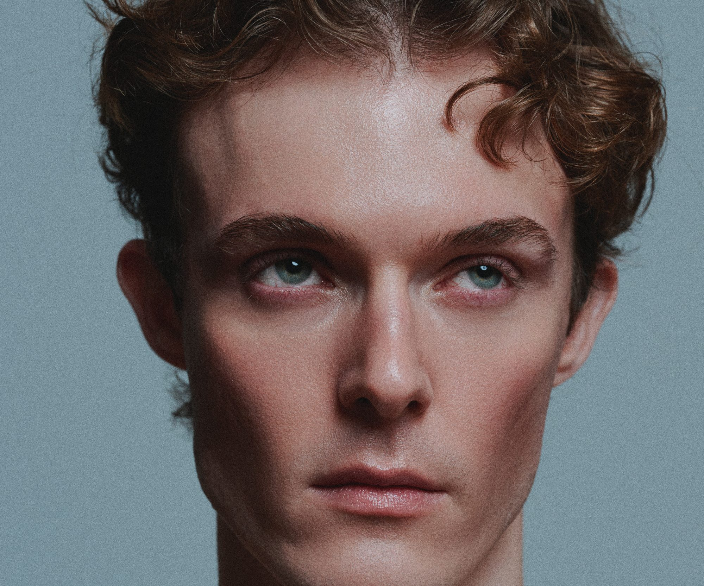

<!doctype html>
<html lang="pt-BR">
<meta charset="utf-8">
<meta name="viewport" content="width=device-width, initial-scale=1, viewport-fit=cover">
<title>PALCO</title>

<!--
  PALCO — A CAPA. É o que mora em deupalco.com.br/ desde 2026-10-05; os
  convites saíram da raiz e foram para caminhos próprios:
      index.html          →  deupalco.com.br/          esta capa
      convite/index.html  →  deupalco.com.br/convite   creme sobre grafite
      fila-a/index.html   →  deupalco.com.br/fila-a    grafite sobre creme
      resee/index.html    →  deupalco.com.br/resee     a Resee
  Os três convites continuam sendo palco-layout.html, byte por byte; esta capa é
  outro arquivo porque é outra peça — não tem motor nenhum.

  A FONTE É layout/palco_layout_capa.ai, prancheta de 1920×1080: a foto (4034×5042,
  sRGB) posta com escala 0,61202 em (-348,38; -650,53), e o logotipo creme
  centrado, com 1080,02 de largura — 56,25% da prancheta, o mesmo desenho do
  convite.

  A FOTO TEM UM SEGUNDO PALCO IMPRESSO, translúcido, na altura do peito (a partir
  de y≈3430 dos 5042). O recorte 16:9 do arquivo nunca chega lá, mas uma tela de
  pé chegava, e apareciam dois logotipos. Então a foto em capa/ é cortada em
  y=3360 — 4034×3360 —, e as contas abaixo são sobre ela.

  A COMPOSIÇÃO SE MEDE PELO LOGOTIPO, não pela janela. Uma foto em
  object-fit:cover numa tela de 16:9 encolhe o rosto até caber a largura, e o
  PALCO deixa de cortar a cara na altura em que corta no arquivo. Então:
    · a foto tem 2,28597 vezes a largura do logotipo (a razão do arquivo);
    · o ponto da foto que no arquivo cai no centro da prancheta — 52,994% da
      largura, 38,581% da altura — fica no centro da tela;
    · se isso não bastar para cobrir a tela, a foto cresce até cobrir: à
      direita do ponto sobram 47,006% dela, então ela precisa de pelo menos
      50/0,47006 = 106,37vw de largura; e a altura dela (0,83292 da largura)
      tem de ser ao menos a da tela, 100/0,83292 = 120,06dvh;
    · na vertical o ponto pode sair do centro: numa tela alta a foto sobe até
      encostar o pé no pé da tela, em vez de mostrar o que está abaixo do corte.
      E o logotipo vai junto com o ponto, não com a tela — senão, no celular, ele
      subia para cima dos olhos. O que manda é ele cortar o rosto logo abaixo
      deles, como no arquivo.
  A 1920×1080 isso dá exatamente o arquivo (o ponto fica a 0,48222 da largura
  abaixo do topo da foto: 38,581% de 5042/4034).
-->

<style>
  :root{
    --creme:#F4F0EE;
    /* o logotipo: 56,25% da largura, como no arquivo, mas nunca mais alto
       do que a prancheta de 16:9 deixaria (56,25vw = 100vh em 16:9) */
    --marca: min(56.25vw, 100dvh);
    --foto: max(calc(var(--marca) * 2.28597), 106.37vw, 120.06dvh);
    --topo: clamp(calc(100dvh - var(--foto) * 0.83292), calc(50dvh - var(--foto) * 0.48222), 0px);
  }
  /* de pé, o logotipo ocupa a largura como no convite do celular */
  @media (max-aspect-ratio: 1/1){
    :root{ --marca: 78vw; }
  }
  html,body{margin:0; height:100%}
  /* o fundo é a média da foto: é o que aparece enquanto ela carrega */
  body{background:#776D6D; overflow:hidden}
  .capa{position:fixed; inset:0; overflow:hidden}
  .capa img{
    position:absolute; display:block; max-width:none;
    width:var(--foto); height:auto; aspect-ratio:4034/3360;
    left:calc(50vw - var(--foto) * 0.52994);
    top:var(--topo);
  }
  .capa h1{
    position:absolute; left:50%; margin:0;
    top:calc(var(--topo) + var(--foto) * 0.48222);
    width:var(--marca); transform:translate(-50%,-50%);
    color:var(--creme); line-height:0;
  }
  .capa h1 svg{width:100%; height:auto; display:block}
</style>

<main class="capa">
  <picture>
    <!-- sizes é a largura da foto na tela: na horizontal 128,6vw (2,286 × 56,25vw);
         de pé quem manda costuma ser a altura, 120dvh. -->
    <source type="image/avif"
            srcset="capa/capa-1200.avif 1200w, capa/capa-2000.avif 2000w, capa/capa-2800.avif 2800w, capa/capa-4034.avif 4034w"
            sizes="(max-aspect-ratio: 1/1) 121vh, 129vw">
    
  </picture>
  <h1>
    <svg viewBox="145.99 142.79 745.25 202.79" role="img" aria-label="PALCO">
<path d="M145.99,148.2c0-1.22.99-2.21,2.21-2.21h97.71c24.77,0,41.79,16.34,41.79,39.92s-17.01,40.05-41.79,40.05h-72.8c-1.22,0-2.21.99-2.21,2.21v111.97c0,1.22-.99,2.21-2.21,2.21h-20.49c-1.22,0-2.21-.99-2.21-2.21v-191.93ZM183.23,204.79h57.99c13.4,0,21.56-7.37,21.56-18.88s-8.17-18.75-21.56-18.75h-59.02c-6.24,0-11.29,5.06-11.29,11.29v15.23c0,8.04,4.82,11.12,12.32,11.12Z" fill="currentColor"/>
<path d="M329.15,145.99h36.32c.98,0,1.85.65,2.12,1.59l55.9,191.93c.41,1.42-.65,2.83-2.12,2.83h-21.8c-.97,0-1.83-.63-2.11-1.56l-6.48-20.94c-.54-2.01-3.49-9.78-13-9.78h-61.21c-9.78,0-12.59,7.76-13.26,9.78l-6.1,20.91c-.28.94-1.14,1.59-2.12,1.59h-20.73c-1.47,0-2.53-1.4-2.13-2.82l54.59-191.93c.27-.95,1.14-1.61,2.13-1.61ZM325.74,288.78h43c11.92,0,10.84-10.18,10.17-13.13l-28.66-102.99c-.54-2.01-1.61-3.62-3.48-3.62-2.01,0-2.95,1.61-3.35,3.62l-27.72,102.99c-.81,3.08-1.87,13.13,10.04,13.13Z" fill="currentColor"/>
<path d="M444.74,145.99h20.49c1.22,0,2.21.99,2.21,2.21v170.77c0,1.22.99,2.21,2.21,2.21h104.92c1.22,0,2.21.99,2.21,2.21v16.74c0,1.22-.99,2.21-2.21,2.21h-129.84c-1.22,0-2.21-.99-2.21-2.21v-191.93c0-1.22.99-2.21,2.21-2.21Z" fill="currentColor"/>
<path d="M577.55,276.32v-64.69c0-41.12,29.33-68.84,73.13-68.84s72.87,27.72,72.87,69.78v9.33c0,1.22-.99,2.21-2.21,2.21h-20.36c-1.22,0-2.21-.99-2.21-2.21v-9.33c0-28.13-19.42-47.68-48.09-47.68s-48.08,19.55-48.08,48.62v61.21c0,29.2,19.29,48.75,48.08,48.75s48.09-19.55,48.09-47.94v-9c0-1.22.99-2.21,2.21-2.21h20.36c1.22,0,2.21.99,2.21,2.21v9c0,42.32-29.2,70.05-72.87,70.05s-73.13-27.73-73.13-69.25Z" fill="currentColor"/>
<path d="M745.24,276.32v-64.69c0-41.12,29.33-68.84,73.13-68.84s72.87,27.72,72.87,68.84v64.69c0,41.52-29.2,69.25-72.87,69.25s-73.13-27.73-73.13-69.25ZM818.37,323.46c28.66,0,48.09-19.55,48.09-48.75v-61.21c0-29.07-19.42-48.62-48.09-48.62s-48.08,19.55-48.08,48.62v61.21c0,29.2,19.29,48.75,48.08,48.75Z" fill="currentColor"/>
    </svg>
  </h1>
</main>
</html>
